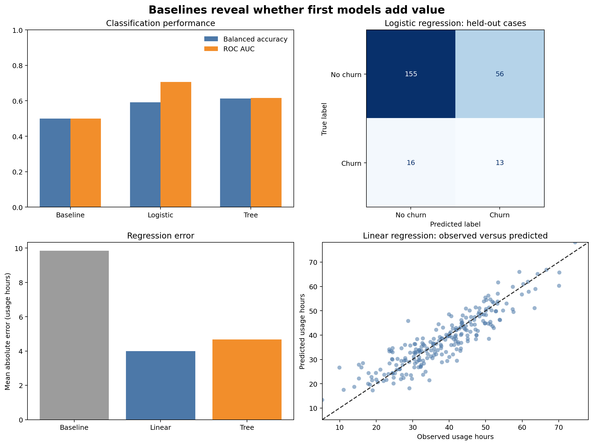

Baselines and First Models
Learning objectives
By the end of this chapter, you will be able to:
- explain why every modelling task needs a baseline;
- construct appropriate classification and regression baselines;
- build end-to-end scikit-learn pipelines for mixed tabular data;
- train simple linear and tree-based models;
- compare models using metrics that match the prediction problem; and
- interpret improvement relative to the baseline without overclaiming.
Start with the easiest credible competitor
A trained model is useful only if it improves on a sensible alternative. The first comparison should therefore be against a baseline, not against another sophisticated model.
For classification, a baseline might always predict the most common class or reproduce the class distribution. For regression, it might always predict the training mean or median. A business rule, existing scoring process, or previous model may provide an even stronger operational baseline.
If a complex model cannot beat a simple baseline on untouched data, additional complexity has not created predictive value. Diagnose the data, target, split, features, and metric before tuning the model.
Continue from the evaluation design
Chapter 03 established that the split must simulate deployment. This chapter uses a chronological holdout: the first three monthly customer snapshots form the training partition and the final month forms the test partition.
The model-development sequence is now:
- define the prediction problem and metric;
- preserve the evaluation boundary;
- build a baseline pipeline;
- build one or two simple candidate pipelines;
- fit using training data only;
- evaluate all candidates on the same held-out rows; and
- record results and modelling assumptions.
The test set is used here for teaching the comparison. In a larger project, model choice and tuning would occur with validation or cross-validation inside the development data, followed by one final test evaluation.
Two supervised-learning tasks
The workbench uses one synthetic customer-snapshot table to demonstrate two common tasks.
Classification
Predict whether a customer will churn during the following month. The target is binary: churned_next_month.
Regression
Predict the customer’s usage during the following month. The target is continuous: next_month_usage_hours.
The two tasks share predictors but require different estimators, baselines, metrics, and interpretations.
Select metrics before viewing results
Classification metrics
| Metric | What it measures | Important limitation |
|---|---|---|
| Accuracy | Overall proportion classified correctly | Can hide failure on an uncommon class |
| Balanced accuracy | Average recall across classes | Does not assess probability quality |
| ROC AUC | Ranking of positive cases above negative cases | May appear strong when operational precision is poor |
| Log loss | Quality and confidence of predicted probabilities | Sensitive to confidently wrong predictions |
This chapter reports accuracy, balanced accuracy, and ROC AUC. No single metric should be interpreted without the class distribution and intended decision.
Regression metrics
| Metric | What it measures | Interpretation |
|---|---|---|
| MAE | Average absolute prediction error | Same units as the target |
| RMSE | Square-root of average squared error | Penalizes larger errors more strongly |
| R² | Improvement over predicting the mean | Can be negative on held-out data |
MAE is the primary regression metric in the workbench because its units—usage hours—are easy to communicate.
A reproducible first-model workbench
Run the complete workflow from the repository root:
bash scripts/bash/04-run-baselines-and-first-models.shThe workflow writes:
data/processed/04-customer-modelling-table.csv
results/figures/04-baselines-and-first-models.png
results/tables/04-classification-results.csv
results/tables/04-regression-results.csv
results/tables/04-test-predictions.csv
The result in Figure 4.1 should be read comparatively. The baseline defines the minimum reference. The simple candidates show whether the available predictors contain learnable signal under the chosen chronological evaluation.
Build preprocessing into the pipeline
The modelling table contains numeric and categorical features. Their transformations must be learned from training data only.
from sklearn.compose import ColumnTransformer
from sklearn.impute import SimpleImputer
from sklearn.pipeline import make_pipeline
from sklearn.preprocessing import OneHotEncoder, StandardScaler
numeric_pipeline = make_pipeline(
SimpleImputer(strategy="median"),
StandardScaler(),
)
categorical_pipeline = make_pipeline(
SimpleImputer(strategy="most_frequent"),
OneHotEncoder(handle_unknown="ignore"),
)
preprocessor = ColumnTransformer(
transformers=[
("numeric", numeric_pipeline, numeric_features),
("categorical", categorical_pipeline, categorical_features),
]
)handle_unknown="ignore" allows a category that appears only in held-out data to be encoded without failing. It does not remove the need to investigate unexpected categories.
Classification baselines and first models
Majority-class baseline
from sklearn.dummy import DummyClassifier
classification_baseline = make_pipeline(
preprocessor,
DummyClassifier(strategy="prior"),
)The prior strategy predicts the training class prior as its probability and selects the most common class as its label. High accuracy can therefore coexist with balanced accuracy near 0.5.
Logistic regression
from sklearn.linear_model import LogisticRegression
logistic_model = make_pipeline(
preprocessor,
LogisticRegression(
class_weight="balanced",
max_iter=1000,
random_state=42,
),
)Logistic regression is a strong first model for binary classification. It is fast, produces probabilities, and offers a useful linear reference. Here, balanced class weights prevent the less common churn class from being ignored at the default decision threshold.
Shallow decision tree
from sklearn.tree import DecisionTreeClassifier
tree_model = make_pipeline(
preprocessor,
DecisionTreeClassifier(
class_weight="balanced",
max_depth=4,
min_samples_leaf=20,
random_state=42,
),
)A shallow tree captures nonlinear thresholds and interactions while limiting complexity. It is not automatically superior to a linear model.
Regression baselines and first models
Mean baseline
from sklearn.dummy import DummyRegressor
regression_baseline = make_pipeline(
preprocessor,
DummyRegressor(strategy="mean"),
)The mean baseline predicts the training-target mean for every row. Its test performance answers whether a model improves on ignoring the features.
Linear regression
from sklearn.linear_model import LinearRegression
linear_model = make_pipeline(
preprocessor,
LinearRegression(),
)Linear regression provides an interpretable additive reference. Its assumptions should later be checked through residual diagnostics.
Shallow regression tree
from sklearn.tree import DecisionTreeRegressor
regression_tree = make_pipeline(
preprocessor,
DecisionTreeRegressor(max_depth=4, min_samples_leaf=20, random_state=42),
)The tree can learn thresholds and interactions but may create unstable stepwise predictions. Constraining depth and leaf size makes the first comparison more defensible.
Fit once, predict on held-out data
Each candidate follows the same interface:
workflow.fit(X_train, y_train)
predictions = workflow.predict(X_test)For probability-based classification metrics:
probabilities = workflow.predict_proba(X_test)[:, 1]The complete script constructs a fresh preprocessor for each pipeline. This keeps candidates independent and ensures every transformation is fitted within its own workflow.
Compare fairly
A fair comparison uses:
- identical training and test rows;
- identical feature definitions;
- the same target construction;
- the same primary metric;
- preprocessing contained inside every pipeline; and
- no model-specific access to held-out outcomes.
Do not compare one model’s cross-validation score with another model’s test score. Do not compare metrics computed on different populations without making that distinction explicit.
Interpret improvement over baseline
Absolute performance matters, but improvement over baseline reveals how much signal the model extracts.
For a metric where larger is better:
\[ \text{Improvement} = \text{Model score} - \text{Baseline score} \]
For an error metric where smaller is better:
\[ \text{Error reduction} = \text{Baseline error} - \text{Model error} \]
A statistically visible improvement may still be operationally too small. Translate metrics into consequences: customers contacted, hours misallocated, cost avoided, or cases missed.
Inspect predictions, not only summary metrics
The workflow saves row-level test predictions. These support later checks for:
- false positives and false negatives;
- unusually large regression errors;
- systematic errors by plan, region, or customer group;
- predictions outside a meaningful range; and
- cases where models disagree.
Row-level inspection must not become informal test-set tuning. Use it to document limitations and design the next validation analysis, not to repeatedly modify the model against the final test cases.
Common mistakes
Skipping the dummy model
Without a dummy model, a score can look impressive despite adding no value over the target distribution.
Treating accuracy as sufficient
When the positive class is uncommon, predicting the negative class everywhere can produce high accuracy and zero positive-case recall.
Fitting preprocessing before the split
This lets held-out distributions influence imputation, scaling, and category encoding.
Starting with an unnecessarily complex estimator
Complexity makes failures harder to diagnose. Simple models expose whether the data, features, and evaluation design are working.
Selecting a model from one noisy split
A single holdout is useful for demonstration but may not provide a stable ranking. The next stage should estimate variability with validation or cross-validation appropriate to the deployment boundary.
First-model checklist
Key takeaways
- Baselines establish whether modelling adds predictive value.
- Classification and regression require different baselines and metrics.
- Pipelines keep learned preprocessing inside the training boundary.
- Logistic and linear regression provide strong, interpretable first references.
- Shallow trees test whether simple nonlinear structure improves performance.
- Fair comparisons require identical data, features, partitions, and metrics.
- Summary scores should be supported by row-level diagnostics and operational interpretation.
Looking ahead
The first models establish reference performance, but one holdout does not show how stable that performance is. The next chapter develops cross-validation strategies, compares models across multiple folds, and introduces disciplined hyperparameter tuning without contaminating the final test set.